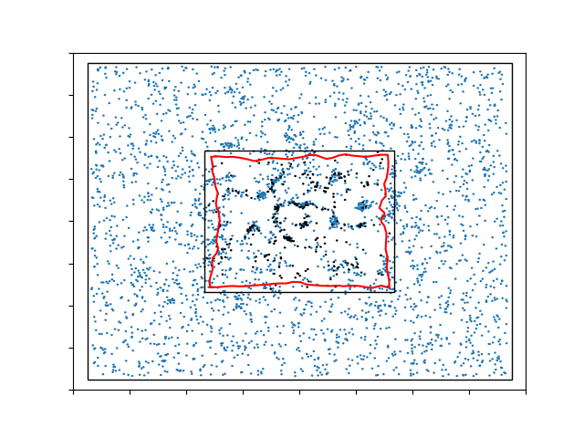
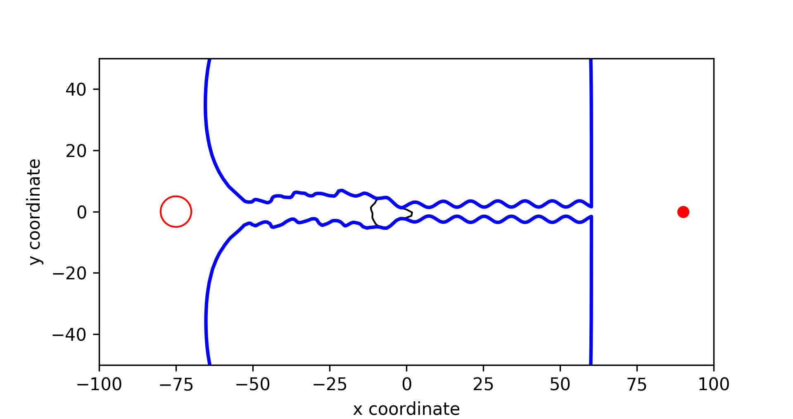
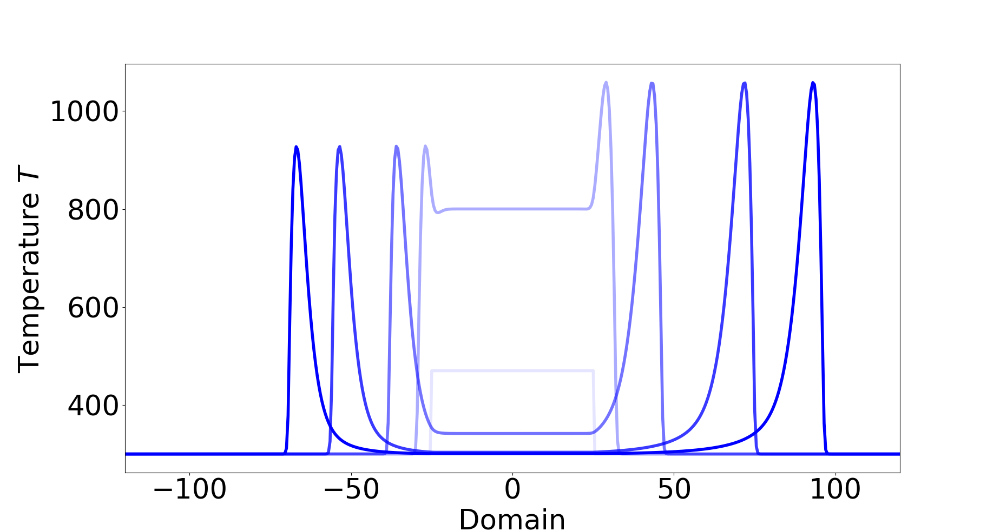

Agent-Based Modelling for Wound Healing
We developed an agent-based model for wound contractions based on the work of previous PhD. The model mainly mimics the second and third phases of wound healing (i.e. the inflammation and the proliferation phases). The model contains many important components, namely, cells, signalling molecules and tissue bundles. The model is developed by using a series of partial differential equations (PDEs), and finite-element methods are used to solve the PDEs. Due to the forces exerted by the (myo)fibroblasts on the extracellular matrix (ECM), contractions occur. Hence, a moving mesh is cooperated in the model.
The model is capable of visualizing the dynamics of important components during the wound healing. Furthermore, it is a preliminary model for a patient-characterised simulation tool, which can be used by the surgeons to predict the contraction outcome of different patient, such that they can select the "best" treatment. Further, as a digital twin, the model is able to test various treatments and works as a reference for patients.

Cell-Based Modelling for the Evolution of Cancer Cell Geometry
We developed a phenomenological model to determine the evolution of cell geometry, which collaborated the impact of the cellular traction forces on cell geometry. The model can be applied to mimic several microscopic biological observations such as cell deformation and migration during wound contraction and cancer metastasis. Furthermore, the current model provides a basis that can be expanded to describe more experimentally observed phenomena in cell geometry.
One application of the evolutionary model is to investigate how cancer cells interact with their extracellular environment, particularly in the mechanical perspective. We set a computational experiment that cancer cells migrate through a narrow deformable microchannel. It turned out that the leader cell migrates the slowest while it enlarges the channel such that the follower cells can migrate more easily. Furthermore, collective cell migration is indeed more beneficial for the cancer cells regarding metastasis and invasiveness.

Model Upscaling and Comparison using Dirac delta Distributions as Point Sources or Point Forces
To model the forces exerted by the (myo)fibroblasts in the wound healing model, point forces are described by Dirac Delta distributions and superposition theory. However, for the dimensionality higher than one, the solution to the momentum balance equation is not in the same Hilbert space that classical finite element techniques aim at. To improve the accuracy of the solution, we came up with several alternatives which have been proven consistent with the immersed boundary approach analytically and numerically.
Furthermore, we are interested in upscaling the agent-based model to the continuum-based model regarding the momentum equilibrium equation. The consistency has been proven analytically in one dimension and numerically in both one and two dimensions with finite-element methods.
Despite the possible singularity of the solution, the Dirac delta distributions are widely used to represent point sources due to the computational efficiency, which can be, in the biological application, the cells or the vescles (in the plant tissue). We investigate the consistency condition between the classical approach (modelling the intracellular and extracellular environment separately) and the point source approach in the diffusion model, and we prove the necessary and essential condition for the consistency in the format of weak solutions. To achieve the condition, extra initial condition is needed.

Evolution of Microbubbles with Focused Ultrasound in Drug Delivery in Brain
The brain-blood barrier (BBB) is the major barrier protecting the brain, which consists of endothelial cells that are connected by tight junctions between the neighboring cells. This BBB limits the transport of drugs from the blood into the brain. To increase the permeability of the BBB and hence drug delivery into the brain, applying a combination of microbubbles (MBs) and focused ultrasound (FUS) shows a great potential. In this process, the MBs start to oscillate due to the FUS and “massage” the membrane of endothelial cells resulting in small, temporary openings in the endothelial cell membrane and in between the cells. Most modelling work on MBs revealed relations between the radius of the MBs and the pressure from the FUS, by treating the MBs as a spherical object where the movement of the MB is neglected.

Travelling Wave in Wildfire Propogation
In this work, we study the propagation of wildfires using an advection–diffusion–reaction model which also includes convective and radiative heat loss. The existence of travelling waves (TWs) in the one-dimensional case is investigated. Prior numerical studies reveal the existence of TWs. Under the travelling wave ansatz and certain approximation, the model is reduced to a semi-autonomous dynamical system with three unknowns which can be analyzed by a shooting algorithm. It is hypothesized that under mild wind speeds, TWs in both directions exist, and under strong tailwinds only TWs in the direction of wind are possible. The theoretical implications are investigated using both solvers for the PDE models and the shooting algorithm. The results match, and unveil the dependence of the fronts on the parameters consistent with the predictions.


{kind=link}
{kind=link}
{kind=link}